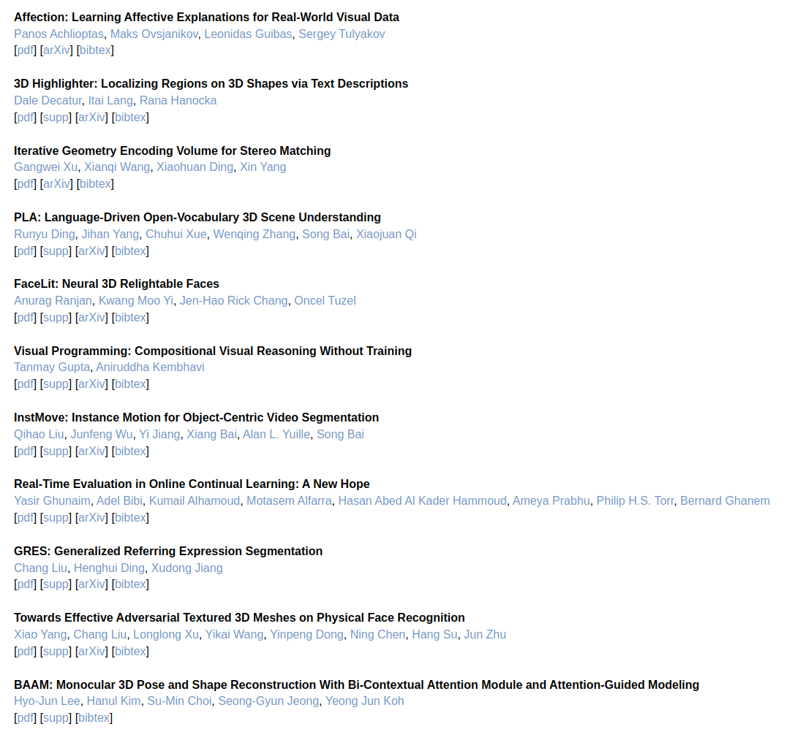
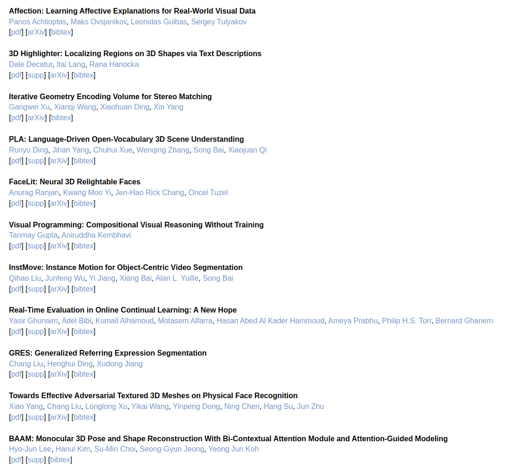

Признаки хорошего названия статьи: оно хорошо звучит и хорошо запоминается.
Проверьте, как звучит название вашего метода или датасета, легко ли вам произносить ее по правилам английского языка (не русского!). Должно быть легко. Вспомните себя молодого добрым словом, когда будете стоять с постером на конференции или проходить собеседования.
Получится подобрать название так, что из него получается благозвучный акроним – поставьте его в начало названия статьи и дайте расшифровку через двоеточие. Примеры названий с акронимами с CVPR 2023:  Если вашу работу и будут цитировать, то делать это будут пользователи LaTeX через bibtex-цитирование. По умолчанию вашей статье присваивается идентификатор вида фамилия первого автора + год + первое слово статьи. Поэтому хорошо, если это слово и является названием метода или датасета, а не чем-то общим вроде learning, self-supervised или towards. Так вашим коллегам будет проще сориентироваться и найти вайшу статью среди всех ссылок. Обидно потерять лишнее упоминание оттого, что кто-то не захочет лишний раз заморачиваться с поиском вашей работы среди пяти Self-supervised....
Проверьте, как звучит название вашего метода или датасета, легко ли вам произносить ее по правилам английского языка (не русского!). Должно быть легко. Вспомните себя молодого добрым словом, когда будете стоять с постером на конференции или проходить собеседования.
Получится подобрать название так, что из него получается благозвучный акроним – поставьте его в начало названия статьи и дайте расшифровку через двоеточие. Примеры названий с акронимами с CVPR 2023:  Если вашу работу и будут цитировать, то делать это будут пользователи LaTeX через bibtex-цитирование. По умолчанию вашей статье присваивается идентификатор вида фамилия первого автора + год + первое слово статьи. Поэтому хорошо, если это слово и является названием метода или датасета, а не чем-то общим вроде learning, self-supervised или towards. Так вашим коллегам будет проще сориентироваться и найти вайшу статью среди всех ссылок. Обидно потерять лишнее упоминание оттого, что кто-то не захочет лишний раз заморачиваться с поиском вашей работы среди пяти Self-supervised....